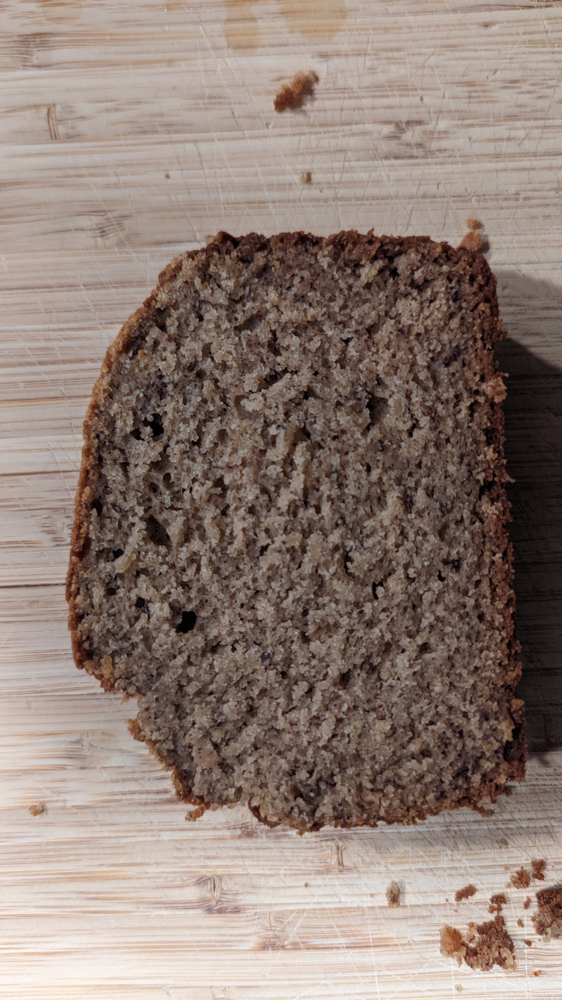

banana bread
the recipe that started it all
Ingredients
- 3 bananas
- 1 tsp lemon juice
- 2 cup flour
- 1 tsp baking soda
- 1 tsp baking powder
- 1/2 tsp salt
- 1 1/2 tsp cinnamon
- 1/2 cup white sugar
- 1/2 cup brown sugar
- 1/2 cup butter
- 2 egg
- 1 1/2 tsp vanilla extract
- 1/2 cup buttermilk (1/2 tsp vinegar + slightly less than 1/2 cup milk)
- 1/2 cup walnut
process
- mash banana, add lemon juice [banana mix]
- mix flour, baking soda, baking powder, salt, cinnamon [dry mix]
- mix both sugar, butter [main mix]
- add eggs to [main mix]
- add [banana mix] to [main mix]
- add vanilla to [main mix]
- add buttermilk to [main mix]
- add walnut to [dry mix]
- fold in [dry mix] into [main mix](do NOT over mix)
- bake @325F for 1 hour + time for clear poke stick
- cool in pan for 5 mins
- cool on rack for 1-24 hrs

curated by BUSHSK8R